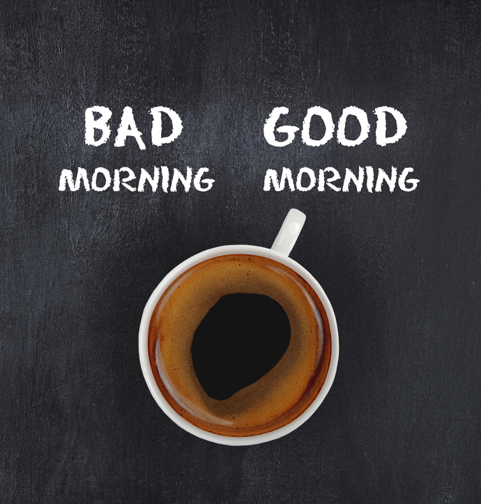
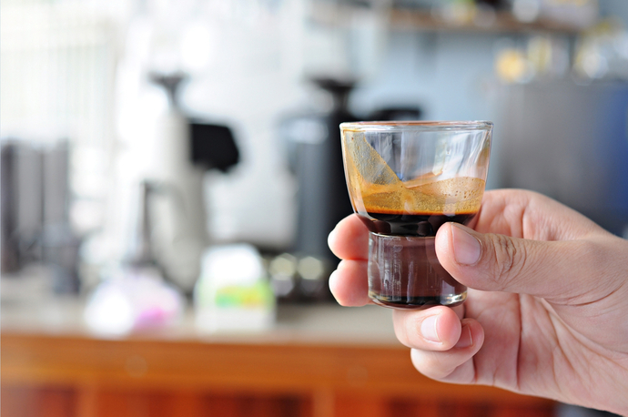

Эспрессо
25–30 мл
База и основа всех кофейных напитков. Именно по эспрессо знающие гости определяют, насколько хорош (или плох) кофе в заведении. Культура кофепития учит пить эспрессо, не отходя от бара, так сказать, у бариста «из рук».
Ристретто
15–25 мл
Короткий эспрессо. В переводе с итальянского означает «густой, крепкий, наваристый». Напиток на 1–2 глотка, с меньшим содержанием кофеина и более насыщенным вкусом. Существует ошибочное мнение, что в малой порции кофе содержится много кофеина. На самом деле все наоборот: в чашечке ристретто кофеина меньше, чем в эспрессо.
Лунго
35–50 мл
Длинный (опять-таки в переводе с итальянского) эспрессо. Готовится по аналогии с эспрессо, но с большим количеством воды. И вместо традиционных для эспрессо 18–30 секунд приготовления и объема 25–30 мл лунго готовится около минуты и выходит объемом до 50 мл.